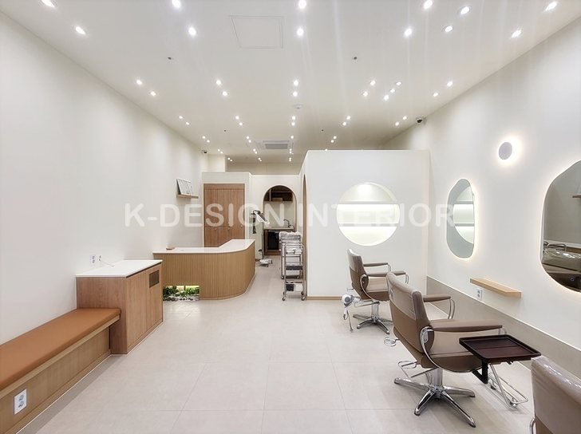

충남 아산 탕정면
탕정면
상업공간 인테리어
탕정면 상업공간 인테리어는 오픈 일정과 예산이 가장 중요합니다. 케이디자인은 현장 실측 후 공정별 일정과 항목별 견적을 먼저 정리해 드리고, 그 일정에 맞춰 시공합니다. 탕정면(탕정산업단지와 신규 아파트 단지가 들어선 곳) 현장도 같은 방식으로 진행합니다.

탕정면 현장 시공 범위
탕정면 현장 상황을 보고 꼭 필요한 공사부터 제안합니다.
- 헤어샵, 뷰티샵
- 학원, 병원
- 카페, 음식점
- 상가, 매장
- 사무실
- 필라테스 스튜디오
- 외관 리모델링
- 항목별 견적철거, 설비, 목공, 마감까지 항목별로 나눈 견적으로 어디에 비용이 드는지 한눈에 보여드립니다.
- 대표 직접 상담탕정면 첫 상담부터 현장 실측, 완공 점검까지 대표 김명구가 직접 챙깁니다.
- 한 팀이 끝까지디자인한 사람이 시공까지 맡아, 처음 이야기한 내용이 마감까지 그대로 이어집니다.
케이디자인이 시공한 상업공간 현장
케이디자인이 설계하고 시공한 현장입니다. 사진을 누르면 크게 볼 수 있습니다.
헤어·뷰티샵
원형 거울, 원목 카운터필라테스 스튜디오
곡선 유리 파티션한식당
간접조명 진열장백석동 미용실 대기 공간
실내 조경, 벽부형 열처리기카페
라인 조명, 샹들리에백석동 미용실 스타일링 존
스테인리스 거울, 포세린 타일탕정면 인테리어 전에 알아 두면 좋은 것
실측 전에 알아 두시면 상담이 빨라집니다.
외관과 간판까지 한 톤으로
매장 앞을 지나는 사람에게 처음 보이는 것은 외관입니다. 외벽 마감, 출입구, 간판 위치까지 실내와 같은 톤으로 맞추면 탕정면 거리에서도 매장 인상이 또렷해집니다.
조명으로 분위기 만들기
라인 조명, 간접조명, 펜던트 조명을 공간 성격에 맞게 섞으면 같은 마감재도 전혀 다른 분위기가 됩니다. 아래 시공 사례의 카페와 한식당이 그 예입니다.
업종에 맞는 설비부터 확인
탕정면에서 카페나 음식점을 준비한다면 전기 용량, 급수·배수 위치, 주방 환기 덕트 경로를 먼저 확인해야 합니다. 케이디자인은 실측 단계에서 이 부분을 함께 점검합니다.
탕정면 현장은 이렇게 진행됩니다
각 단계마다 확인할 내용을 먼저 안내합니다.
전화 상담
평수와 공사 범위, 희망 일정을 알려주세요.
현장 실측
대표가 탕정면 현장을 직접 재고 설비 상태를 봅니다.
디자인과 견적
예산에 맞춰 조정할 항목을 함께 정합니다.
시공
철거부터 마감까지 공정표대로 진행합니다.
완공과 점검
완공 후 사용하며 불편한 점도 다시 살핍니다.
자주 묻는 질문
탕정면 상가 인테리어도 시공하나요?
네. 아산 탕정면 상가, 카페, 음식점, 사무실 등 상업공간 인테리어를 설계부터 시공까지 진행합니다.
어떤 업종의 매장을 시공했나요?
카페, 음식점, 주점, 헤어·뷰티샵, 필라테스 스튜디오, 공방, 상담 라운지, 매장 외관 리모델링 등을 시공했습니다.
헤어샵이나 필라테스 스튜디오도 시공하나요?
네. 헤어·뷰티샵, 필라테스 스튜디오, 공방처럼 업종에 맞는 설비와 동선이 필요한 공간도 시공했습니다.
상가 인테리어 상담 때 무엇을 준비하면 좋나요?
업종, 대략적인 평수, 오픈 희망일, 참고하고 싶은 매장 사진이 있으면 상담이 빨라집니다. 도면이 없어도 현장 실측으로 진행할 수 있습니다.
- 상호
- 케이디자인
- 대표
- 김명구
- 시공 분야
- 주거공간, 상업공간 인테리어
- 시공 지역
- 충남 천안, 아산, 당진 / 경기 평택